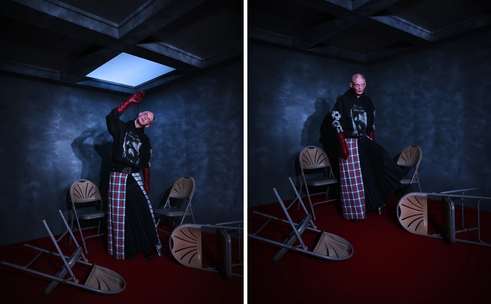
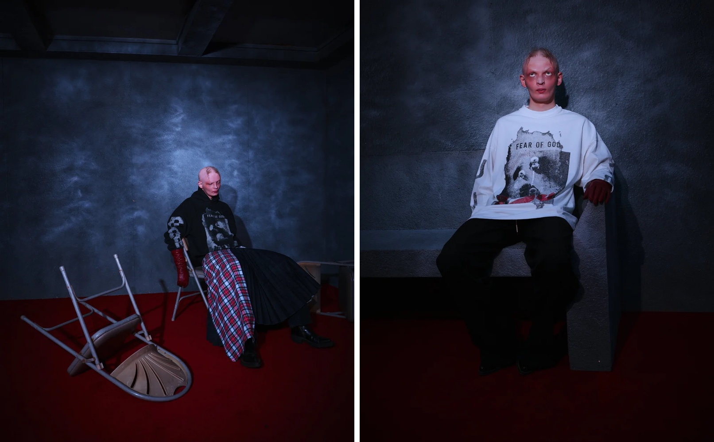
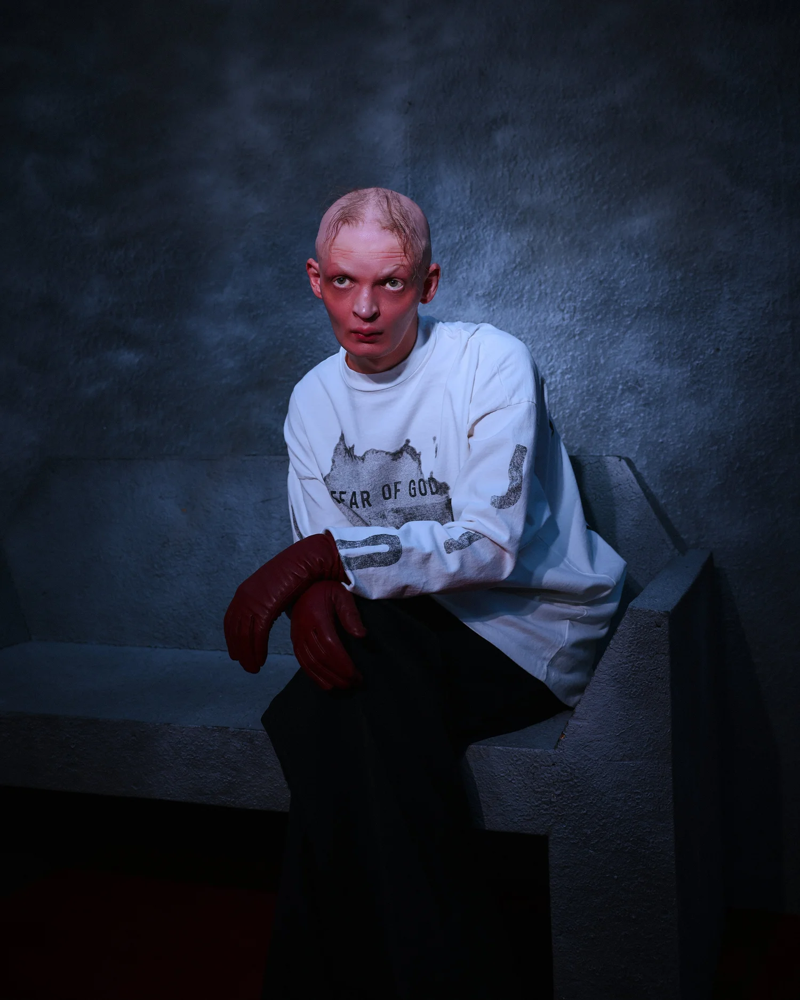
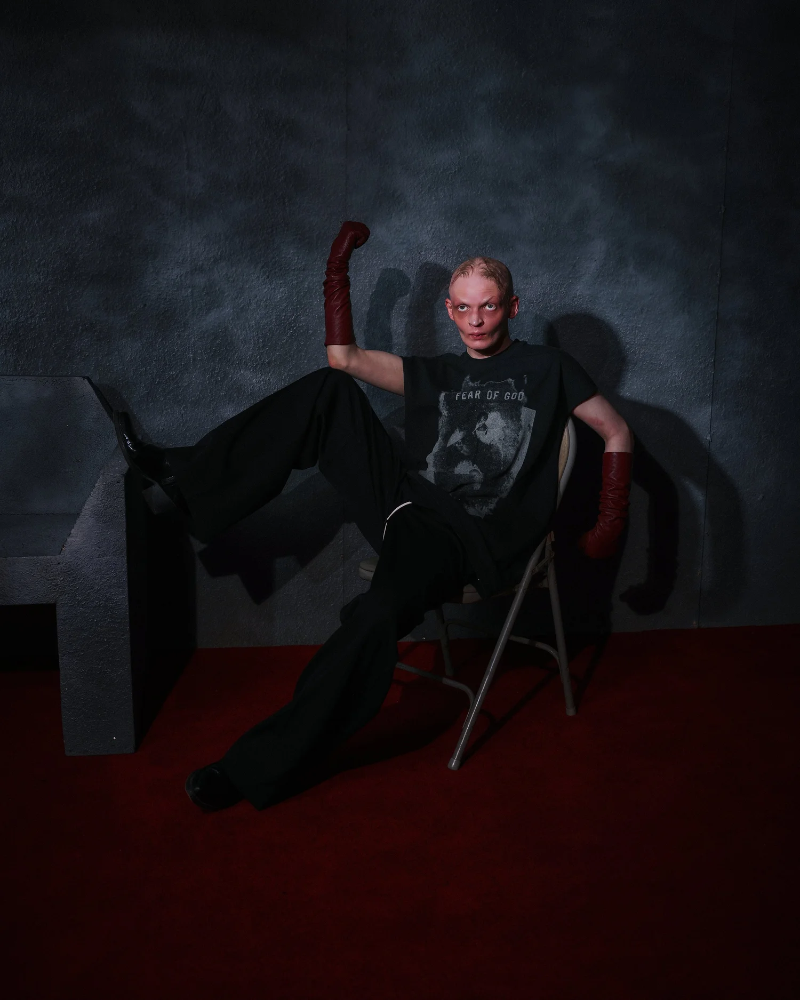
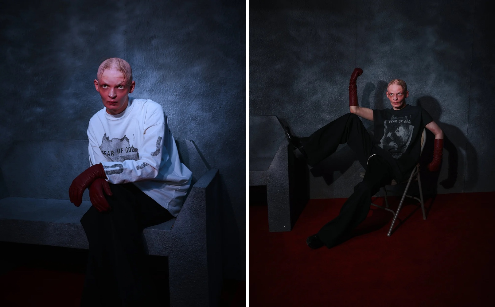

Project 04 — Creative Direction / Photography / Live Activation
J.I.D × Fear of God
About the project
PAZL directed and photographed the campaign for the limited capsule collection between J.I.D and Fear of God, where music meets fashion.
Covered by PAUSE under the headline "J.I.D and Fear of God Launch Limited Capsule Collection".






Credits
- Direction
- PAZL
- Photography
- Fred Saint Foster
- Artist
- J.I.D
- Brand
- Fear of God